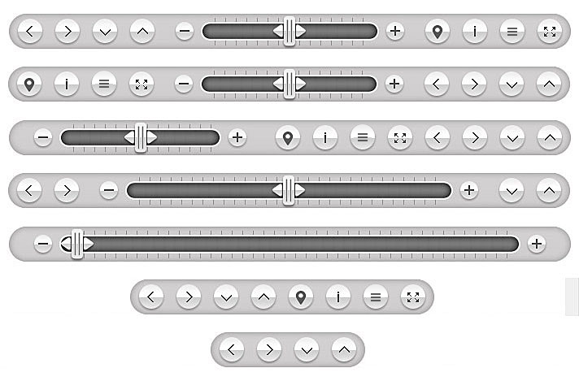
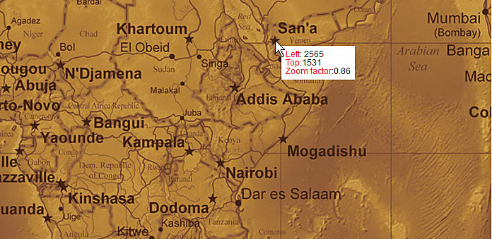
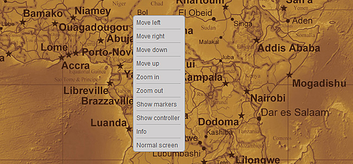

|
The Megazoom plugin is a powerful, versatile, easy to use and customize image navigator for displaying large images prepared for showcasing products (high resolution product images, e.g. clothes, cars, technical schemes etc), displaying maps, and any other images, with its zooming, panning, dragging, navigation controls, scrollbar, zoom buttons,and highly customizable markers.It has a responsive layout making it perfect for any type of page layout. The Megazoom plugin is mobile optimized running great on iOS (iPad, iPhone), Android and Windows8 mobile devices and of course it works on every modern browser and older browsers like IE7 and IE8. We have tested it on IPAD3 and on a SAMSUNG GALAXY S3 and it runs great on both devices, follow the links to view this demos. Video demonstration on Android or Video demonstration demo on IOS. The Megazoom plugin can be used in any type of HTML page including Wordpress, at this link there is a demo page running in Wordpress (Please note that this is NOT a Wordpress plugin!, the Megazoom must be installed manually with html code and the images uploaded with a ftp client, we have inclulded a tutorial about how to install it in Wordpress. We have also included full documentation, examples pages and PSD files along with five skins. |
|
Tons of options (check them out in our live previews). Easy to use and install. Fully Responsive & Mobile Optimized (Smartphones & Tablets). Fast CSS3 & JavaScript engine with fall back on CSS1 for older browsers like IE7 or IE8 (exceptional performance!). Responsive layout Three dispay types: responsive, fullscreen and lightbox. Support for large image resolution, we have made successful tests with images up to 6000px width and/or height. The zoom factor(maximum zoom level) and start/initial zoom factor (initial zoom level) can be specified. The animation zoom speed and animation pan speed. can be set. Double clik zoom and double clik zoom factor (optional). Mouse wheel support on desktop. Mouse drag on desktop or touch drag on mobile. Gestures event support on mobile, the image can be zoomed with two fingers!. Keyboard support (optional). Animated preloader, the preloader text can be modified. Navigator window (optional). Complete control buttons bar with buttons. All buttons are optional, the order of buttons can be set as you wish and they can be easily removed if one or more are not needed. Below there is an image illustrating some possible buttons order scenarios. Pan buttons (optional). Zoom in/out buttons plus scrollbar(optional) Hide / show markers button (optional) Info window button for showing a detailed custom made window which supports unlimited html content (optional). Hide / show controller button. Fullscreen button (optional) Customizable buttons tooltips, the buttons tooltips text can be modified with ease based on the presented product type (please note that the buttons tooltips are optional). Awesome markers / hotspots support! Three hotspots types (link, small info window and detailed info window) allowing to display information about the product on specific regions. The markers / hotspots can be set to be displayed only after a specified zoom factor. The markers / hotspots can be of any size or shape and they can vary, for example if you want to add three link type hotspots each of them can have a different size or graphics, this applies to all markers/hotspots types. The markers also have support for animated gif. Built in tool for finding the correct position of the marker / hotspot on an image Basically this tool allows to move a white box over the image and displays the current position and zoom factor this way is easy to set a marker over the image. Please note that the white box info will update even if the image is zoomed offering fine tune control. Below there is an image to ilustrate this tool. Customizable custom right click menu (optional). Below there is an image to ilustrate this. Five awesome skins along with the .psd files included (check them out in our live previews). Detailed Documentation included!. Examples files for each skin and display type included, this way the html can be copied and pasted into your html page!. Many others features, all of them are explained in details in the documentation files. |
|
The gestures events only work on IOS (Ipad and Iphone) the other operating systems dose not support gestures events. Using the up and down keyboard arrows is also scrolling the browser if the keys are hold, this is something that can't be prevented, the browser does not allow it. This behavior only applies if the display type is responsive or lightbox. Mobile devices operating systems are rasterizing the image, this means that if an image has 6000px in width the operating system will reduce the width based on it's limits. |